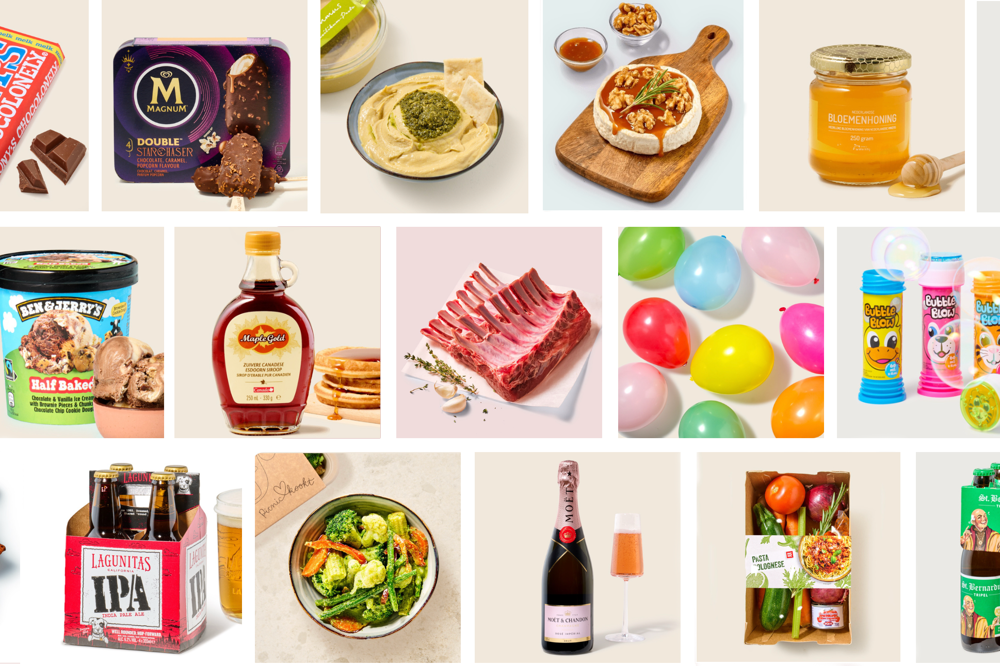

Editing
Als eerste inhouse retoucher bouwde ik bij WE Fashion het volledige editingproces op en coördineerde dit. Ik bewaakte de beeldkwaliteit en consistentie van alle productfoto's, volgens huisstijl en trends, en leidde het editingteam in nauwe samenwerking met fotografen, creatieve teams en externe partners om deadlines en werkprocessen op elkaar af te stemmen.

Bij Picnic Technologies bewaakte ik de beeldkwaliteit van het volledige productassortiment in NL, DE en FR — van fotografie tot live in de app. Als Product Owner Assets (DAM) coördineerde ik duizenden afbeeldingen en optimaliseerde ik de workflows tussen Assets, Salesforce en Figma.

Ik leidde editingteams met internationale collega's en externe partners, documenteerde werkwijzen en richtlijnen, en bewaakte de deadlines op meerdere projecten tegelijk.